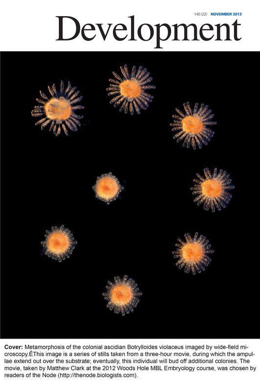
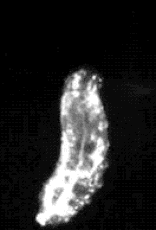

Matthew Q. Clark, PhD · Bucknell University
The Clark Lab · Bucknell University
We use the fruit fly Drosophila to trace how neural circuits are built during development — and how they generate coordinated behavior, from the crawl of a larva to the beat of a wing.

Every step, every escape, every wingbeat begins as a pattern of activity in a circuit of neurons. We want to know how those circuits are wired — and how they become behavior.
Imaging and science-art from the lab and from Woods Hole.
Descending neurons, motor circuits, and how flies build movement.
See the science →A first-year CURE where students run real optogenetics experiments.
In the classroom →The students and mentees who make the work happen.
Meet the lab →Pueblo Brain Science and building diversity in neuroscience.
Get involved →
A crawling larva keeps its left and right sides in near-perfect symmetry — a small window onto how circuits coordinate movement in real time.
Bucknell undergraduates: you don’t need prior research experience to start — just curiosity and a willingness to learn. The lab is a place to ask real questions and grow into a scientist.
Get in touch